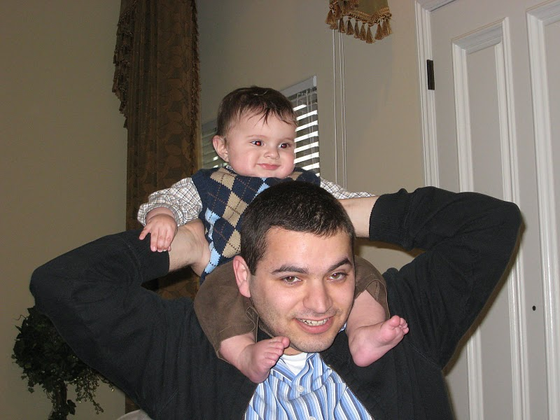

| Ghassan Misherghi
| |
email: web@gmw6.comphone:
|
Postal address:Ghassan Misherghi1600 Amphitheatre Parkway Mountain View, CA 94043 | |
publications
-
HDD: Hierarchical Delta Debugging.
Ghassan Misherghi and Zhendong Su. -
Deckard: Scalable and Accurate Tree-based Detection of Code Clones.
Lingxiao Jiang, Ghassan Misherghi, Zhendong Su, and Stephane Glondu. -
A General, Formal Framework for Evaluating Firewall Optimization Techniques.
Ghassan Misherghi, Lihua Yuan, Zhendong Su, Chen-Nee Chua, and Hao Chen. -
Techniques for specifying bug patterns.
Daniel J. Quinlan, Richard W. Vuduc, and Ghassan Misherghi. - My masters thesis. Very similar to the HDD paper above, but with syntactically correct simplifiers generated automatically from language grammars.
software
- HDD (requires antlr 2.7.7, swig, and python 2.5).
- maxmem: a tool to determine the peak memory usage of a process in Linux. Rather than periodic sampling, maxmem checks memory use after all system calls.
-
My bashrc detects and configures any applications installed in ~/apps/. Uninstalling an application is as simple as
rm -rf ~/apps/application_name.
links
- Inspiring professors in Computer Science@UC Davis: Premkumar Devanbu, Charles Martel, Ronald Olsson, Phillip Rogaway, and Zhendong Su.
- Some of my friends have web pages: Earl Barr, Christian Bird, Tom Duerig, Dhanji Prasanna.
- wmii: a clean, simple, and powerful window manager.
- Mercurial: a clean and simple distributed VCS.
- Arch Linux: a clean and simple Linux distribution.
- NIST Dictionary of Algorithms and Data Structures.
about me
I'm a software engineer at Google. I attained my B.S. and M.S. from UC Davis. Writing software is a lot of fun: it's part craftsmanship, part maths, part empiricism, and part design. I recommend Peter Seibel's "Coders at Work" for some interviews that highlight many approaches to software development. I consider simplicity a virtue, and I try to apply that to many facets of my life. I enjoy music; my favorite sources include Tortoise, Silversun Pickups, Johann Sebastian Bach, and Radiohead. I play the piano from time to time. I enjoy food, but don't have a favorite cuisine.
not so recent photos

[html valid]
©2008 Ghassan Misherghi.